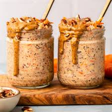

Home
Protein Over Night Oats Recipe

Over night oats are a great option for breakfast! There is little prep time and it is a cheap recipe.
If you add some protein powder to it, it can make a great meal before a workout!
Ingredients
- 1/2 Cup of Oats
- 1/2 Cup of Milk
- 2 tbsp of PB Fit Peanut Butter Powder
- 1/4 Cup of Yogurt
- 1 tbsp of Chia Seeds
- 1 tbsp of Flax Seeds
- 1 Scoop of Whey Protein Powder
- 1 tbsp of Honey
- 1/2 Banana
Instructions
- Add the oats and milk to the jar
- Add the peanut butter powder, chia seeds, and flax seeds
- Add the protein powder to the jar and then mix everything together
- Add the honey and yogurt to the jar and again stir until thoroughly mixed
- Place in fridge over night
- Cut a banana in half then chop evenly and add to jar
- Mix in the banana and then enjoy